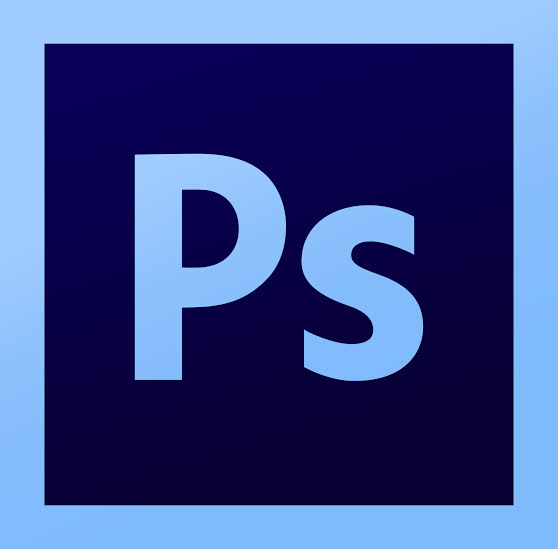

About Me
Hello, I am currently applying for the job of Front-End Developer especially a Part-Time Job since I am currently Studying in the Philippines as a College Freshman in the course of Computer Science and I want to work and earn while enhancing more of my skills in college. If I will be presented with a Full-Time Job, I can consider to grab that opportunity and focus on the job that I loved. Thankfully I will be free to work in this coming school break from April to August.
I do lift weights and had a good deal of knowledge in the fitness industry. WORKING OUT is Hard and Full of Pain
but it is the only way to improve always remember that “Success isn’t always about greatness. It’s about
consistency. Consistent hard work gains success. Greatness will come.”.
I will also like to share that I enjoy
playing CHESS, I like how the way
game plays on, the strategy, the creativity, the plans, the risk and sacrifices, the pressure, the uncertainity,
all of these makes the game exciting. There is a quote in chess that "Every chess master was once a beginner"
this
quote serves an important meaning and can be also applied to other areas of life and I am grateful of the
benefits
of this game to my life.
Playing Guitar is also my hobby as I am a Music
Lover and I will enjoy it forever and
sorry to
say that I do not have any quotes to share with you, but I will say, that...... "Music is LIFE".
I’m constantly learning web technologies and other design related topics, currently planning to learn JavaScript framework, improve further my Designing and Development Skills and considering to enter the field of Software Development. You can see my resume for more information but these are some of my skills that I use in Front-End Web Development:
Languages:
HTML5 
CSS3 
SASS 
JavaScript 
PHP 
Skills/Techonologies:
Wordpress 
Bootstrap 
Git 
Github 
Adobe PS 
Figma 
NPM 
How Do I Work?
Planning Stage
In building a website, Planning comes first. I write down all the notes and the the important things that I will do in a site, or what the clients wants him to do with his site. In addtion, I ask myself some serveral questions: What attack will do in this type of site? What are the designs elements I will use(fonts, color combinations, etc.)? Who are the audience? How can the site serves its purpose?
Implementing Phase
After Planning, I must find a way how to implement my plans for the site. I will structure and organize my Development Workspace especially my files for faster and cleaner coding, Design the site based on the plan with some help of prototyping tools, and this time, I will know what to add more in the site and add it to the plan and I will able to know the estimated time of completion of the website.
Coding Period
And now that all has been planned and implemented, the coding phase comes into place. First, In the coding phase, I will start to code the desktop version of the website design and only after that I will now start to make the site responsive in diffrent devices. When I have any problem, I use some resources to get some help like Google, Youtube, Stack Overflow and so on, and learned from it.
Design process
In my design process, I always starts with the basic details of the site. I will begin to search for the right font design for the site, then I must hit on the right color combination of the site, I spend some time doing trial and error doing these two things. Furthermore, I will start glancing and getting some inspiration in some websites across the internet and I will choose the best and the most suitable web design in the site and I will add a some improvement in the design. I am using Figma for Prototyping the Website for efficient Designing and I use the Adobe Photoshop for Image Manipulation and Editing. Nowadays, there are tons of tools to aid the Developers in Designing and Development that speed up the development and make better outputs.

Development process
In the Development Process, I will start making my plans into a output
and I use my time efficiently, I divide my works as possible in smallest details and I focused my self to
accomplished my goals in the site step by step and rest is the very important part of the development.
I am using Visual Studio Code in coding, because its very convenient as it is a very powerful text editor that
I get easily comfortable with and I also use Github to save my projects to repositories and have a track on my
code and when I moved a place I can easily continue my work and I conclude that Git and Github is a Safe Haven
for the developers. In addition, some music will do, to improve my productivity and to increase my performance
in the development. When problem comes visualizing comes into play, I write the problem and distinguished it
into smallest details as much as possible to know the characteristics of the problem to solve it effectively.
My Latest Works
University Online Admission

A Online University Admission that aims to lessen the inconvenience of the applicants and the staff of the university when the admission to college and senior high school approaches. This will result for faster and better services of the university.
Using: HTML5, CSS3/Sass, JavaScript, Bootstrap
E-commerce Website

A E-commerce site namely Fitness Seeker that aims to have a online identity in the internet to attract more customers for their business. In addition, it intends to get in touch with the customers online and to sell other products.
Using: HTML5, CSS3/Sass, JavaScript and Bootstrap
E-commerce Landing Page

A E-commerce Landing Page that promotes a merchandise namely Corsair One i160. The objective of the site is to gain audience and convince the customer to buy the product by displaying important and wonderful characteristics of the item.
Using: HTML5, CSS3/Sass, JavaScript and Bootstrap
Educational Website

A Educational Website that gives informations about our Universe and the other astronomy stuff like Galaxies, Stars, Planets, etcetera. The goal of the site is to give insight on how enourmous our universe is and how we are extremely lucky to live.
Using: HTML5, CSS3/Sass, JavaScript and Bootstrap